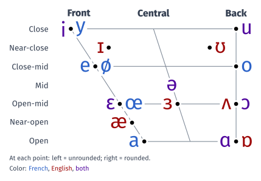

12 voyelles orales
/ə/, the e muet, is close to /ø/ but can disappear (when speaking fast). /ɛ/ is more open than /e/ ; /œ/ resembles /ɛ/ with rounded lips.
4 voyelles nasales
3 semi-voyelles
Like /i/, /u/ and /y/, but pronounced very quickly.
20 consonnes

Vowels
short
long
diphthongs
1 /ɛ/ is often written /e/ in dictionaries.2 /oʊ/ is often /əʊ/ in British sources.
Consonants
voiceless
voiced
other